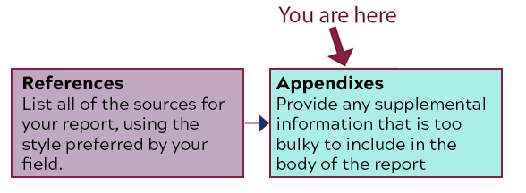

Use conventions of various workplace genres, such as proposals, instructions, correspondence, reports, and slide decks, with understanding of how the genre conventions can be used as heuristics and as principles of arrangement. [CLO 4]
Apply principles of effective visual design for print and electronic presentation, including hierarchical, chronological, and spatial arrangements. [CLO 6]
Identify and apply the principles of effective style in the composing of usable, reader-centered written communications. [CLO 7]
The Task

The Sections of the Back Matter of the Recommendation Report
What I Want You to Do
Add any supplemental information that relates to the report but that does not belong in the report itself. You can include any kind of information that provides more details or background for people who want to read more..
Why I Want You to Do It
The Appendixes give your readers more information about your topic and usually focuses on resources that are useful but that do not fit into the flow of the report itself.. This section is one of the required parts of your recommendation report. I am breaking the report out, section-by-section, to guide you through the process of writing the document and help make sure you include everything that is required for a complete report.
Where You Can Find Help
From Markel & Selber, Chapter 18:
The details on Appendixes, from p. 489:
“An appendix is any section that follows the body of the report (and the glossary, list of symbols, or reference list). Appendixes (or appendices) convey information that is too bulky for the body of the report or that will interest only a few readers. Appendixes might include maps, large technical diagrams or charts, computations, computer printouts, test data, and texts of supporting documents.”
Example Appendix, on pp. 513 (part of the sample recommendation report in Figure 18.8).
LinkedIn Learning video, “How to prepare appendices” (5m 14s), from the Technical Writing: Reports course.
How You Do It
Open the word processor document where you are working on your recommendation report.
Scroll through your document to the location for your Appendixes.
For each appendix, do the following:
Begin the page heading by typing the word “Appendix” and the relevant letter at the top of the page
When there are several Appendixes, label each with a letter, not a number (e.g., Appendix A, Appendix B).
If you include only one Appendix, omit the letter.
Follow the label with a colon, and add the specific name of the appendix. For the example in the sample report in the textbook, the specific name is “Appendix: Clinical-Staff Questionnaire.”
Center the page heading on the page.
Skip a blank line.
Add the content of the appendix (e.g., the questionnaire and its results).
Review the section and make any additions or changes, using the information from the textbook and LinkedIn Learning video as needed.
Go through the body of your report and ensure that all references to your Appendixes are labeled correctly with the letter and specific title.
Copy the information from your Appendixes in your word processor document, and paste it into text box below. You do not have to worry about the formatting here, only in the finished report.
Submit your work:
Submit here by 11:59 PM on Friday, April 23.
If you need more time, submit your document later. The assignment will close on Friday, April 30.
Traci will add the related points to Canvas when she marks your work Complete. She will check only for completion at this stage. Why this change? To allow everyone a longer grace period. This system will still give you the points you earn, but it gives you longer to earn them.